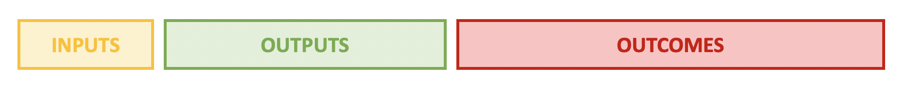
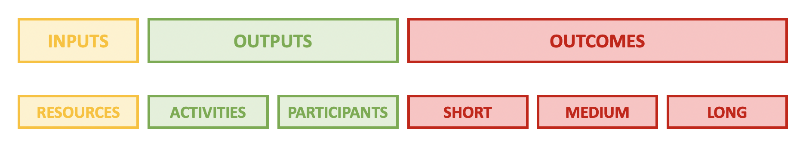
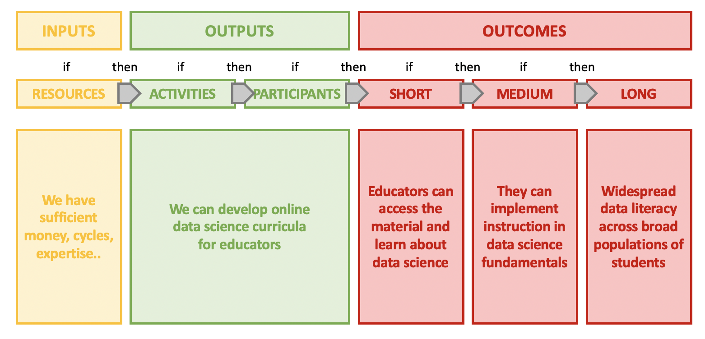
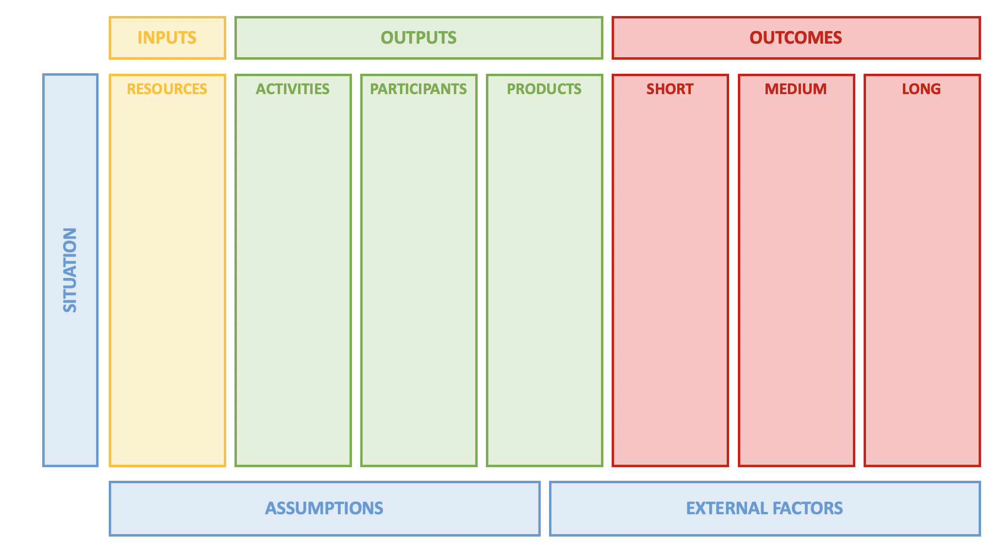
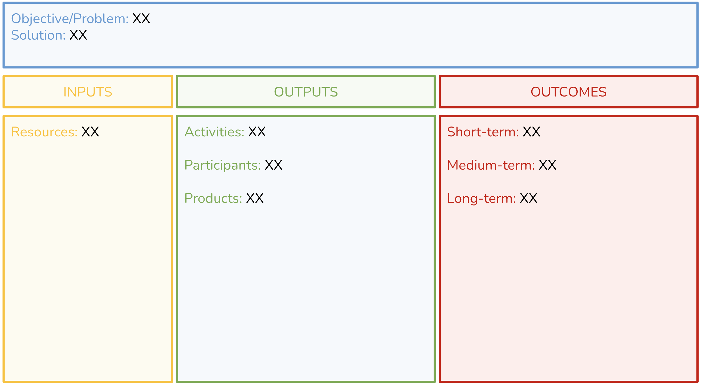

flowchart LR
INPUTS --> ACTIVITIES --> OUTPUTS --> OUTCOMES/IMPACTS
Scenario{{Accelerate synthesis via data science training}}
R1[Instructor] & R2[Classroom space] & R3[Projector] --> B{Data Science Workshop}
B --> C(Workshop Curriculum)
B --> D(Presentations and Practice)
C & D --> E[/Improved Delta management/] & F[/Increased analytic efficiency/]
Learning Objectives
- Become familiar with Logic Models
- Apply the principles of Logic Models to synthesis development
- Refine synthesis group research question
2.1 Logic Models
Logic models are a planning tool that is designed to support program development by depicting the flow of resources and processes leading to a desired result. They are also used for outcomes-based evaluation of a program and are often requested as part of an evaluation planning process by funders or stakeholders.
A simplified logic models comprise three main parts: Inputs, Outputs and Outcomes.

Inputs reflect what is invested, outputs are what is done and outcomes are the results of the program.
In a more detailed logic model, outputs and outcomes are further broken down. Outputs are often represented as ‘Activities’ and ‘Participants’. By including participation (or participants), the logic model is explicitly considering the intended audience, or stakeholders, impacted by the program. Engagement of this audience is an output. In the case of outcomes, these can be split into short, medium and long-term outcomes. Sometimes this last category may be labeled ‘Impact’

Defining the inputs, outputs and outcomes early in a planning process enables teams to visualize the workflow from activity to results and can help mitigate potential challenges. Logic models can be thought of as having an ‘if this then that’ structure where inputs -> outputs -> outcomes.

In the example below we have constructed a simple logic model for a hypothetical project where training materials are being developed for a group of educators to implement at their respective institutions.

Linkages are not always sequential and can be within categories, bi-directional and/or include feedback loops. Detailing this complexity of relationships, or theory of action, can be time-consuming but is a valuable part of the thought process for project planning. In exploring all relationships, logic modeling also allows for assessing program feasibility.

The above graphics include two sections within Outputs - Activities and Participants - and this is quite common. There is variation in logic model templates, including versions with a third type of output - “Products’. Sometimes description of these products is contained within the Activities section - for example, ‘develop curricula’, ‘produce a report’ - however calling these out explicitly is beneficial for teams focused on product development.
Program development (and logic modeling) occurs in response to a given ‘Situation’ or need, and exploring this is the first step in modeling. The situation defines the objective, or problem, that the program is designed to solve hence some logic models may omit the left-hand situation column but be framed with Problem and Solution statements. Finally, comprehensive logic modeling takes into consideration assumptions that are made with respect to the resources available, the people involved, or the way the program will work and also recognizes that there are external factors that can impact the program’s success.

In summary:
Logic models support program development and evaluation and comprise three primary steps in the workflow:
- Inputs: Resources, contributions, and investments required for a program;
- Outputs: Activities conducted, participants reached, and products produced; and
- Outcomes: Results or expected changes arising from the program structured as short-, medium- and long-term.
2.2 Logic Models for Synthesis Research
Logic models are one tool for program development and have sufficient flexibility for a variety of situations, including planning for synthesis research. While some logic model categories may feel less relevant, the process of articulating a research objective, associated resources and activities and proposed outcome(s) has value.
Below is a table of logic model elements and example questions for each element framed for both a typical logic model and synthesis research.
| Logic Model Element | Logic Model Framing | Synthesis Research Framing |
|---|---|---|
| Problem Statement | What is the problem? Why is this a problem? Who does this impact? | What is the current state of knowledge? What gaps exists in understanding? Why is more information / synthesis important? |
| Inputs | What resources are needed for the program (e.g. personnel, money, time, equipment, partnerships, etc.)? | What is needed to undertake the synthesis research? For personnel, think in terms of the roles that are needed (e.g. data manager, statistician, writer, editor etc.) Consider the time frame. Condsider what data are needed and what already exists? |
| Outputs - Activities | What will be done (e.g. development, design, workshops, conferences, counseling, outreach, etc.)? | What activities are needed to conduct the research? This could be high level or it could be broken down into details such as the types of statistical approaches. |
| Outputs - Participants | Who will we reach (e.g. clients, participants, customers, etc.)? | Who is the target audience? Who will be impacted by this work? Who is positioned to leverage this work? |
| Outputs - Products | What will you create (e.g. publications, websites, media communications, etc.)? | What research products are planned or expected? Consider this in relation to the intended audience. Is a peer-reviewed publication, report or white paper most appropriate? How will derived data be handled? Will documentation, workflows, or code be published? |
| Outcomes - Short-term | What short-term outcomes are anticipated among participants? These might include changes in awareness, knowledge, skills, attitudes, opinions or intent. |
Will this work represent a significant contribution to current understanding? |
| Outcomes - Medium-term | What medium-term outcomes are predicted among participants? These might include changes in behaviors, decision-making and actions. |
Will this work promote increased research activity or open new avenues of inquiry? |
| Outcomes - Long-term | What long-term benefits, or impacts, are expected? This might include changes in social, economic, civic, or environmental conditions. |
Will this work result in local, regional or national policy change? What will be the long-term impact of increased investment in the ecosystem? |
2.3 Activity: Synthesis Planning with Logic Models
Setup
Breakout into your research synthesis groups to refine your ideas for potential synthesis topics. Use either the Logic Model Template or a Mermaid Flowchart to create your logic model.
The goal for this activity is to develop one or more high-level logic models that:
- Summarize the synthesis research question
- Define the inputs needed to approach the synthesis research question
- Define the outputs including the activities, participants, and products needed to address the research question
- Define at least the short-term outcomes and long-term outcomes of the research
Often it is helpful to start by working backwards. Consider what outcomes are you trying to achieve, what outputs would help you get to those outcomes, and finally what inputs do you need to create those outputs.
Logic Model Template
Use our Logic Model Template to create your Logic Model. When you access the link, you must create your own copy to start editing.

Mermaid Flowchart
Use a Mermaid Flowchart to create your Logic Model. These is a tool that is embedded in Quarto documents.
Source Code for Mermaid Flowhart Example (above):
```{mermaid}
flowchart LR
INPUTS --> ACTIVITIES --> OUTPUTS --> OUTCOMES/IMPACTS
Scenario{{Accelerate synthesis via data science training}}
R1[Instructor] & R2[Classroom space] & R3[Projector] --> B{Data Science Workshop}
B --> C(Workshop Curriculum)
B --> D(Presentations and Practice)
C & D --> E[/Improved Delta management/] & F[/Increased analytic efficiency/]```